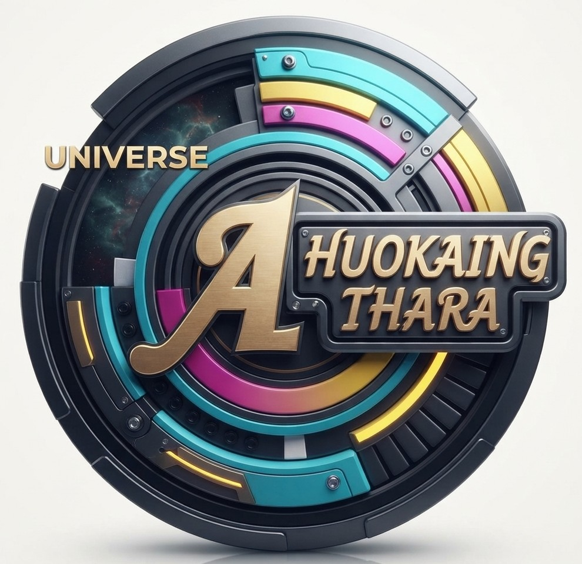

Welcome to the Universe of Movies & Cinema
បណ្តុំភាពយន្ត និងរឿងភាគរំភើបៗ គុណភាពកម្រិតខ្ពស់ ផ្តល់ជូនការកម្សាន្តឥតដែនកំណត់!
Top Featured Movies / ភាពយន្តល្បីៗប្រចាំវេទិកា
ចុចលើរូបវីដេអូនីមួយៗដើម្បីចាប់ផ្តើមលេងដោយស្វ័យប្រវត្តិ (Click to Autoplay)

UNIVERSE HUOKAING THARA
Movie #1 • Horror & Drama • 👁️ 15,000,000 Viewsវីដេអូទី ១៖ ជីវិតដ៏សុខសាន្តរបស់គ្រួសារមួយត្រូវបានបំផ្លិចបំផ្លាញភ្លាមៗ នៅពេលដែលអាម៉ាចាប់ផ្តើមស្តែងចេញនូវអាកប្បកិរិយាចម្លែកៗ ព្រមទាំងប្រព្រឹត្តពិធីផ្លូវងងឹតនៅក្នុងផ្ទះចាស់មួយខ្នងនោះ។
Movie 1: A family's peaceful life is shattered when Ama begins displaying disturbing behavior and performing dark rituals inside their old home.
UNIVERSE HUOKAING THARA
Movie #2 • Action & Drama • 👁️ 18,000,000 Viewsវីដេអូទី ២៖ រឿងនេះនិយាយអំពីក្រុមសន្តិសុខរោងចក្រមួយក្រុម ដែលព្យាយាមជួលផ្ទះបុរាណស្ងាត់មួយកន្លែងក្នុងតម្លៃថោកដើម្បីបោកប្រាស់លក់យកកម្រៃជើងសារពីអ្នកទិញក្នុងតម្លៃថ្លៃកប់ពពក (៧,០០០ ដុល្លារ លក់យក ២០,០០០ ដុល្លារ)។ ប៉ុន្តែ ពេលដែលពួកគេមករស់នៅទីនោះ ពួកគេក៏បានជួបប្រទះនឹងបាតុភូតខ្មោចលងយ៉ាងសន្ធោសន្ធៅជារៀងរាល់យប់នៅម៉ោង ១០។តាមពិតទៅ ផ្ទះនោះគឺជាកន្លែងដែលកើតមានសោកនាដកម្មអតីតកាល ដោយសារតែការប្រចណ្ឌខុសរឿង និងការសង្ស័យខុស បណ្តាលឱ្យប្តីប្រពន្ធម្ចាស់ផ្ទះដើម (ឈ្មោះ ផៃ និង គន្ធា) សម្រេចចិត្តចងកសម្លាប់ខ្លួនឯងស្លាប់តៃហោង និងជាប់កម្មពារវិញ្ញាណមិនអាចទៅចាប់ជាតិកើត ដោយត្រូវបន្តលងបន្លាច និងលេងសើចរាល់ពេលម៉ោង ១០ យប់។ ចុងបញ្ចប់ ក្រុមសន្តិសុខទាំងនោះក៏បានយល់ច្បាស់ពីសាច់រឿង ក៏សម្រេចចិត្តឈប់បោកប្រាស់ និងលែងហ៊ានរំខានផ្ទះនោះទៀត ខណៈដែលវិញ្ញាណប្តីប្រពន្ធម្ចាស់ផ្ទះក៏បានរួចផុតពីកម្មពារបន្តិចម្ដងៗ។
Movie 2: This movie tells the story of a group of factory security guards who rent a cheap, abandoned old house to scam a buyer by reselling it for a massive profit ($7,000 house sold for $20,000). However, once they move in, they experience terrifying hauntings every night precisely at 10:00 PM. The house is haunted because of a tragic past: the original owners (Phai and Kunthea) died from suicide due to a fatal misunderstanding and extreme jealousy. Trapped by their tragic fate, their spirits are bound to the house and continuously replay their torment every night. In the end, the guards realize the dark truth, abandon their scam scheme, and leave the house alone, allowing the restless spirits to finally find closure and move on.
UNIVERSE HUOKAING THARA
Movie #3 • Action & Drama • 👁️ 20,000,000 Viewsវីដេអូទី ៣៖ ភាពយន្តនេះឆ្លុះបញ្ចាំងពីជីវិតពិត ភាពតស៊ូ និងតម្លៃនៃភាពស្មោះត្រង់ក្នុងសង្គម។ សាច់រឿងរៀបរាប់ពីតួអង្គសាមញ្ញម្នាក់ដែលខំប្រឹងប្រែងរកស៊ីចិញ្ចឹមគ្រួសារ ទោះបីជាជួបប្រទះការលំបាក និងភាពក្រីក្រយ៉ាងណាក៏ដោយ។ តាមរយៈការតស៊ូ អត់ធន់ និងទឹកចិត្តស្មោះត្រង់ ទីបំផុតគាត់ក៏ទទួលបានឱកាសការងារ និងការជួយជ្រោមជ្រែងពីអ្នកមានគុណ ដែលនាំឱ្យជីវិតគ្រួសារមានភាពល្អប្រសើរជាងមុន និងបង្ហាញពីតម្លៃនៃសេចក្ដីស្រឡាញ់ប្រកបដោយភាពស្មោះស្ម័គ្រ។
Movie 3: This movie is a Cambodian dramatic feature film that tells a story about life struggles, perseverance, and the true value of honesty and loyalty [03:58:06]. It follows ordinary, hardworking individuals who face financial hardships and life challenges [03:57:10]. Through their unwavering endurance, humility, and honest nature, they eventually earn trust, opportunities, and a better life for their family, highlighting the message that goodness, hard work, and genuine love will ultimately be rewarded.
UNIVERSE HUOKAING THARA
Movie #4 • Action & Drama • 👁️ 22,000,000 Viewsវីដេអូទី ៤៖ រឿងនេះនិយាយពីបុរសម្នាក់ដែលមានល្បិចកល និងចរិតខិលខូច (ដើរតួជាអាចារ្យ ឬគ្រូចាប់ខ្មោចក្លែងក្លាយ) ដែលព្យាយាមរកស៊ីបោកប្រាស់គេតាមរយៈការទទួលបោសសម្អាត ឬដេញខ្មោចតាមផ្ទះដែលគេល្បីថាមានខ្មោចលង ដើម្បីបានលុយកាក់ [03:14, 04:21]។ ប៉ុន្តែ ក្នុងដំណើររឿងពោរពេញទៅដោយភាពវឹកវរ សើចសប្បាយ ព្រោះចុងក្រោយតួអង្គនេះត្រូវជួបប្រទះផ្ទាល់ជាមួយបិសាច ឬខ្មោចពិតៗ និងត្រូវជាប់ក្នុងផែនការបោកប្រាស់គ្នាទៅវិញទៅមក រវាងមនុស្ស និងខ្មោច ដែលបង្កប់នូវគំនិតបែបកំប្លែងហួសចិត្ត និងការចំអកឡកឡើយដល់ជំនឿអបិយជំនឿផ្សេងៗ។
Movie 4: The story follows a crafty and cunning con man who pretends to be a spiritual master or ghost hunter. He takes on jobs to exorcise haunted houses just to make a quick buck by tricking clients [03:14, 04:21]. However, things take a hilarious and chaotic turn when he actually encounters real spirits and gets caught up in a web of clever tricks and scams between humans and ghosts. Overall, it is a humorous parody that pokes fun at supernatural beliefs through slapstick comedy and witty banter.
UNIVERSE HUOKAING THARA
Movie #5 • Action & Drama • 👁️ 24,000,000 Viewsវីដេអូទី ៥៖ រឿងនេះបង្ហាញពីតួអង្គ និងជម្លោះក្នុងគ្រួសារ ដែលពាក់ព័ន្ធនឹងការលោភលន់ ការមើលងាយគ្នា និងការខកចិត្តក្នុងជីវិតប្តីប្រពន្ធ។ នៅចុងបញ្ចប់នៃរឿង បានផ្ដល់សារអប់រំយ៉ាងសំខាន់ថា៖ មនុស្សស្រីម្នាក់ដែលព្រមចាកចេញពីឪពុកម្តាយមកផ្ញើជីវិតជាមួយយើង ក្នុងនាមជាប្តីត្រូវតែចេះមើលថែទាំនិងស្រឡាញ់គាត់ឱ្យបានល្អបំផុត ដើម្បីកុំឱ្យមានការសោកស្តាយ ឬវិប្បដិសារីនៅពេលដែលអ្វីៗយឺតពេលទៅហើយ។
Movie 5: The story delivers a powerful moral lesson about valuing your partner. It highlights how a woman leaves her parents to build a life with her husband, and emphasizes that a husband should cherish and take the best care of his wife to avoid deep regret and heartbreak when it is too late.
UNIVERSE HUOKAING THARA
Movie #6 • Action & Drama • 👁️ 26,000,000 Viewsវីដេអូទី ៦៖ រឿងនេះគឺជារឿងខ្មោច ព្រលឹងអាឃាត និងរឿងព្រេងនិទានបែបប្រពៃណីខ្មែរ ដែលនិយាយអំពីតួអង្គស្ត្រីម្នាក់ឈ្មោះ «នាងភួង»។ cốt story ផ្តោតទៅលើភាពអយុត្តិធម៌ ការចោទប្រកាន់ និងការស្បថស្បែរបញ្ជាក់ភាពបរិសុទ្ធនៅចំពោះមុខអ្នកតា (ដូចជាអ្នកតាក្រហមក) ដែលជាជំនឿអរូបិយក្នុងស្រុក។ នៅពេលដែលនាងត្រូវគេបង្ខំឱ្យស្បថទាំងបំពាន ឬដោយសារភាពអយុត្តិធម៌ ពាក្យសម្បថនោះបានក្លាយជាចំណុចបញ្ចប់ដ៏សោកសៅនៃជីវិតរបស់នាង។ ក្រោយពេលស្លាប់ទៅ វិញ្ញាណរបស់នាងបានប្រែក្លាយជាខ្មោចអាឃាតដ៏គួរឱ្យខ្លាច តាមលងបន្លំអ្នកក្នុងភូមិដែលពាក់ព័ន្ធនឹងរឿងអយុត្តិធម៌លើរូបនាង រហូតធ្វើឱ្យរឿងរ៉ាវក្នុងភូមិទាំងមូលមានភាពចលាចល និងភ័យខ្លាចជាខ្លាំង។
Movie 6: The story revolves around a tragic local legend featuring a woman named Neang Phoung. It centers on themes of injustice, false accusations, and local superstitious traditions, such as making a sacred oath before a village spirit shrine to prove one's innocence. After being forced into a fatal or unjust oath that ultimately leads to her tragic death, her spirit transforms into a vengeful ghost. Her restless and terrifying ghost haunts the villagers involved in her mistreatment, spreading fear and supernatural chaos throughout the entire community.
UNIVERSE HUOKAING THARA
Movie #7 • Action & Drama • 👁️ 20,000,000 Viewsវីដេអូទី ៧៖ រវីដេអូនេះគឺជាកំប្លែងបែបផ parody ក្នុងទម្រង់ជាសាច់រឿងខ្មោចសំណើច ("ខ្មោចអាជាន់មីន") ដែលល្បីល្បាញលើបណ្តាញសង្គម។ វាគ្មិន ឬអ្នកកាត់តបានយកឈុតឆាកភាពយន្ត ឬគំនូរជីវចលមកបញ្ចូលសំឡេងបែបកំប្លែង និងសំឡេងរំញោចចម្លែកៗ ដើម្បីបង្កើតជាកម្សាន្តសប្បាយ មិនមែនជាភាពយន្តគួរឱ្យខ្លាចនោះទេ។
Movie 7: This video is a humorous, meme-style parody/dubbed compilation typical of Cambodian internet culture. It playfully repurposes movie clips or animation featuring ghost themes and comedic characters ("Ah Joun Meen"), blending chaotic sound effects, pop culture references, and funny voiceovers to create an entertaining story rather than a serious horror film.
About Our Cinema Hub / អំពីវេទិកាភាពយន្ត
Khmer: វេទិកានេះប្រមូលផ្តុំភាពយន្ត និងវីដេអូភាគគុណភាពខ្ពស់ ដើម្បីបំពេញតម្រូវការកម្សាន្តរបស់អ្នកគាំទ្រគ្រប់រូប។
English: Dedicated to streaming premium movies and high-definition series for global audiences.
Streaming Quality / គុណភាពផ្សាយផ្ទាល់
Khmer: រាល់វីដេអូត្រូវបានសម្រិតសម្រាំងយ៉ាងពិសេស ដើម្បីធានាបាននូវល្បឿនលឿន និងរូបភាពច្បាស់ត្រជាក់ភ្នែក។
English: Optimized for ultra-fast streaming performance and high-definition viewing across all screens.